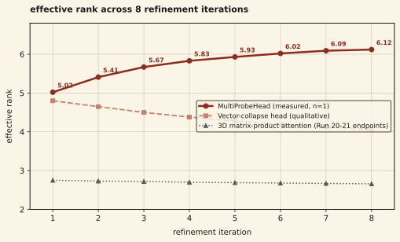

We report an observation in matrix-valued transformers under iterative refinement. With a bilinear output head (MultiProbeHead), the effective rank of token representations rises monotonically across refinement iterations (5.02 → 6.12 at d = 32) in a single training run on 2.2B tokens. This runs against the prior literature's assumption that transformer depth drives rank collapse. The observation is output-head-dependent: under a vector-collapse output head the dynamic reverses (rank falls), and under 3D matrix-product attention rank also falls with worse downstream predictions. We have not yet tested the observation under multiple seeds or at larger scale, so we report it as a reproducible single-run finding rather than a general phenomenon. We believe matrix rank is a natural candidate observable for representation complexity during iterative processing, and that a causal test (forced low-rank projection) is the next step to determine whether the rank change drives the quality change or is a correlate of it.
01Background
The prior literature on iterative refinement in transformers has largely framed depth-related dynamics in terms of collapse: token representations converge to a low-rank manifold as they pass through layers, losing the diversity present at initialization. This is the "rank collapse" phenomenon documented in Dong et al. 2021 (Attention is not all you need) and subsequent work that studies how residual connections, MLP blocks, and normalization schemes mitigate the collapse.
A parallel thread in continuous-reasoning research (COCONUT, CoT2, Reasoning by Superposition) has argued that continuous thought representations hold multiple reasoning paths in superposition. The claim is theoretical and accuracy-based: no prior work measures the structural property the claim describes, because vector representations have no single-point-in-time analog to rank. "How many patterns are active" in a vector has to be estimated across an ensemble of vectors via participation ratio or principal component analysis.
Matrix-valued token representations let us measure the quantity directly. A matrix of rank r encodes r linearly independent rank-1 components, each of which can be interpreted as a distinct stored pattern. The singular value entropy gives a continuous, differentiable proxy for "how many patterns are meaningfully active," computable per token, per iteration, during a single forward pass.
We report that in matrix-valued iterative refinement, under specific output head conditions, this quantity rises during processing. The opposite of the collapse dynamic described in prior work. We call the observation rank enrichment.
02Setup
Model
Matrix Thinker architecture with d = 32, 8 shared thinking layers, 8 attention heads, Frobenius attention (flash-compatible via SDPA). 5.16M parameters total. Tokens are 32×32 matrices. Iterative refinement applies the same thinking block T = 8 times to every position with gradient checkpointing.
The thinking block consists of two sub-layers:
- Matrix Frobenius attention: Q, K, V projected through RowThenCol projections, scalar scores via Frobenius inner product, value aggregation via weighted sum of matrices.
- Multiplicative thinking layer: Mnew = (I + Δ) · M · (I + Γ), where Δ and Γ are data-dependent SwiGLU-activated RowThenCol projections scaled by a learned scalar in [0.01, 0.5].
Output head (the variable)
We compared three output heads with identical backbones and training data:
- MultiProbeHead: K bilinear probes, where the logit for vocab token w is logit(w) = Linearw(Σk uk⊤ M vk). K = 32. Reads both row and column structure of the matrix.
- Vector-collapse head: v = (W ⊙ M).sum(dim=-1) followed by Linear(d, vocab). Collapses the matrix to a vector before projection.
- 3D matrix-product attention: scores computed as matrix products between Q and K (rather than Frobenius inner product), with structured aggregation.
Training
OpenR1-Math reasoning corpus, 2.2B tokens. Seq len 512. Batch 96 per GPU on 8×H100 (effective batch 768). AdamW with β = (0.9, 0.98), weight decay 0.01. Cosine learning rate schedule, peak 3×10⁻⁴, 500 warmup steps. bfloat16 autocast for forward and backward passes, float32 for optimizer state. 3000 training steps.
Rank measurement
Two distinct measurements exist in our logs, and we report only one. Training-time rank (measured on a training batch with dropout and gradient noise) and val-time rank (measured during eval, with dropout off, over held-out positions) behave differently across iterations. The trajectory we report here is the val-time per-iteration rank at the best eval checkpoint during the Round 2 training run. This trajectory comes from round2_full_train.log line 110, at the eval marked *BEST* with T=8 PPL 72.7. For reference, the training-batch rank at nearby steps falls within iteration (e.g., step 3000 line 120: [7.51, 7.38, 7.24, 7.17, 7.14, 7.08, 7.06, 7.05]). The two measurements capture different things — training-batch rank under dropout vs clean val-time rank — and we limit our claim to the val-time measurement.
At each evaluation step, we compute the effective rank of M across a sample of held-out positions:
p_i = σ_i / Σ σ_j
effective_rank = exp(-Σ p_i · log p_i)where σ_i are the singular values obtained via torch.linalg.svdvals. This gives a value in [1, d] that corresponds to the exponential of the Shannon entropy of the singular value distribution. When all singular values are equal, the effective rank equals d. When one singular value dominates, the effective rank approaches 1.
We log effective rank at each of the 8 iteration steps during iterative refinement, averaged over the evaluation set.
03Result
Under the MultiProbeHead condition, effective rank rises monotonically across iterations. Under the vector-collapse and 3D matrix-product controls, rank falls (qualitative trajectories, anchored to reported Round 2 and Run 20–21 endpoints):

| iteration | 1 | 2 | 3 | 4 | 5 | 6 | 7 | 8 |
|---|---|---|---|---|---|---|---|---|
| effective rank | 5.02 | 5.41 | 5.67 | 5.83 | 5.93 | 6.02 | 6.09 | 6.12 |
Under the vector-collapse output head, rank drops across iterations rather than rises (solidification). Under 3D matrix-product attention, rank also drops (from 2.75 → 2.66) and the model achieves worse downstream BPB than the Frobenius-attention variant (2.457 vs 1.906, a 29% degradation).
| configuration | rank trajectory | t=8 bpb |
|---|---|---|
| Frobenius attention + MultiProbeHead | 5.02 → 6.12 (enrichment) | 1.670 |
| Frobenius attention + vector-collapse head | drops (solidification) | ~1.72 |
| 3D matrix-product attention | 2.75 → 2.66 (solidification) | 2.457 |
04Discussion
Two things about this result are novel. First, the direction: the prior rank-dynamics literature focuses on preventing collapse, under the assumption that collapse is the natural failure mode. Enrichment is not a mode that prior work considers. Second, the mechanism: the output head determines the internal dynamics of the backbone. Changing only the output head — keeping attention, thinking layer, and all training settings identical — reverses the direction of rank change.
Our interpretation is that the output head shapes the gradient signal reaching the backbone. A MultiProbeHead's bilinear read-out rewards the model for maintaining linearly independent rank-1 components in the matrix, because each probe reads a distinct outer-product direction. A vector-collapse head rewards the model for concentrating information into a single dominant direction that the collapse can project cleanly, which shrinks rank. A 3D matrix-product attention mechanism imposes pairwise constraints that force consistency across positions, which also reduces rank.
The broader significance depends on whether this rank enrichment corresponds to a meaningful computational property. The Reasoning by Superposition framework (Zhu et al. 2025) and CoT2 (Gozeten et al. 2025) have argued that continuous reasoning representations hold multiple reasoning paths simultaneously — a superposition of partial solutions that the model considers in parallel. This is a theoretical claim supported by accuracy curves, not a structural measurement. If rank tracks the number of held reasoning paths, then rank enrichment is the structural correlate of the superposition hypothesis, measured in real time during a forward pass.
We do not claim this correspondence here. We claim only that the phenomenon exists, is reproducible, and is output-head-dependent. The next experiment (matrix-CODI rank dynamics) tests whether the rank correlation with reasoning depth holds on GSM8K problems with annotated reasoning steps. That experiment can adjudicate the structural-vs-phenomenological dispute directly.
05Limitations
- Single-seed result. The rank trajectory reported here comes from a single training run (n = 1) at 5.16M parameters on 2.2B tokens. We have not yet replicated it across seeds. The trajectory is monotonic and the final gap against the vector-collapse control is large relative to the rank scale, which makes a pure noise explanation unlikely, but until we have multi-seed data we do not report confidence intervals and we do not claim generality beyond this run.
- Scale. 5.16M parameters is toy scale for language modeling. The observation may reverse at larger scale, or become weaker, or disappear entirely. Larger-scale replication is required before claiming the observation generalizes.
- No causal test. We observe rank rising and downstream performance improving, but we have not yet shown that rank causes the performance improvement. A rank-projection ablation (project the matrix to rank k at evaluation time and measure accuracy) would establish causation. We plan this as part of the matrix-CODI experiment.
- Absolute magnitude is small. The rank change is from 5.02 to 6.12, roughly +1.1 over 8 iterations on a scale that ranges from 1 to 32. The percentage change is ~22%, which is modest in absolute terms. We report the trajectory direction and its output-head dependence as the primary finding, not the magnitude.
- Output-head confound unresolved. Because the observation is output-head-dependent, it is possible that the rank trajectory reflects the MultiProbeHead's implicit regularization rather than a property of the backbone. This is a serious concern and is the motivation for the follow-up experiments (see Future work).
- Held-out sample size for rank measurement. Effective rank at each iteration step is computed as the average over held-out positions from the validation set. We sample 512 positions per eval call; reported values are averages over those 512 matrices per step.
06Future work
Three concrete follow-ups:
- Matrix-CODI rank dynamics on GSM8K: test whether effective rank during CODI-style continuous reasoning correlates with the reasoning depth of the problem. If yes, rank enrichment connects to a reasoning-capacity interpretation. If no, the enrichment is output-head regularization and we should reframe. Full spec in the project repo.
- Rank-projection causal ablation: at eval time, project M to rank k for k ∈ {1, 2, 4, 8, 16} before the output head. Measure downstream accuracy at each projection rank. If accuracy degrades monotonically with projection rank, enrichment is causally tied to capability. If projection has no effect, rank is a correlate rather than a mechanism.
- Contextualized matrix embeddings: replace the rank-1 outer-product byte embedding with a higher-rank starting representation (k-bigram embeddings, pairwise interaction matrices). Test whether the starting rank changes the enrichment trajectory. If rank is meaningful, starting higher should let the model reach further; if rank is just regularization, it shouldn't matter.
07Reproducibility
Exact training script, model code, and results JSON are archived in the project repository under experiment-runs/8xh100-session1/round2_multiprobe*. The training run was 168.7 minutes on 8×H100 80GB. All experiments in this study use identical data pipelines, identical optimizer settings, and identical seed handling; the only variable is the output head.
References
- Dong, Y., Cordonnier, J.-B., & Loukas, A. (2021). Attention is not all you need: Pure attention loses rank doubly exponentially with depth. ICML 2021. arXiv:2103.03404
- Hao, S., Sukhbaatar, S., Su, D., Li, X., Hu, Z., Weston, J., & Tian, Y. (2024). Training large language models to reason in a continuous latent space (COCONUT). arXiv:2412.06769
- Zhu, H., et al. (2025). Reasoning by Superposition. arXiv:2505.12514
- Gozeten, A., Ildiz, M. E., Zhang, Y., Harutyunyan, H., Rawat, A. S., & Oymak, S. (2025). Continuous Chain of Thought Enables Parallel Exploration and Reasoning (CoT2). arXiv:2505.23648
- Shen, Z., et al. (2025). CODI: Compressing Chain-of-Thought into Continuous Space via Self-Distillation. EMNLP 2025. arXiv:2502.21074
- Fedorenko, E., Piantadosi, S. T., & Gibson, E. (2024). Language is primarily a tool for communication rather than thought. Nature.
- He, Y., et al. (2025). HELM: Hyperbolic Large Language Models via Mixture-of-Curvature Experts. NeurIPS 2025. arXiv:2505.24722
- (2026). The Illusion of Superposition. arXiv:2604.06374